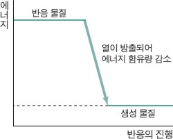

화학 반응에서 반응 물질이 생성 물질보다 더 많은 에너지를 함유하고 있으면 반응이
진행되면서 물질이 함유한 에너지가 감소한다. 이때 감소한 에너지를 외부로 방출한다.
이러한 반응을 발열 반응이라고 한다. 일반적으로 발열 반응이 일어날 때에는 외부로
열을 방출하므로 주위의 온도가 올라가며, 빠르게 진행되는 경우 많은 양의 열이 일시에 방출되어
폭발 현상이 수반되기도 한다. 금속의 산화, 연료의 연소, 중화 반응 등의 화학 변화는
물론 기체의 액화, 액체의 응고 등의 상태 변화도 발열 반응이다.

흡열반응
화학에서 에너지란 물질이 가진 고유한 특성이다. 모든 물질은 에너지를 가지고 있으며 그 양은 서로 다르다.
물질에 화학적 변화가 발생하면 에너지의 증감이 수반된다. 만약 반응물질의 에너지가 상대적으로 작고,
생성하고자 하는 물질의 에너지가 크다면 그 차이만큼의 에너지를 주위로부터 얻어와야 반응이 진행된다.
흡열반응은 이처럼 반응물이 가진 내부에너지보다 생성물이 가진 내부에너지가 커 주위로부터 열에너지를 흡수하면서 진행되는 반응이다.
반대로 반응물질의 에너지가 생성물의 에너지보다 커 열을 주위로 방출하면서 진행되는 반응은 발열반응이라 한다.
흡열반응의 역반응은 발열반응이며, 발열반응의 역반응은 흡열반응이다.